Welcome to SafeZone Dashboard
Alarm Timeline (Last 7 Days)
Top 5 Breach Cows
Farm Trends
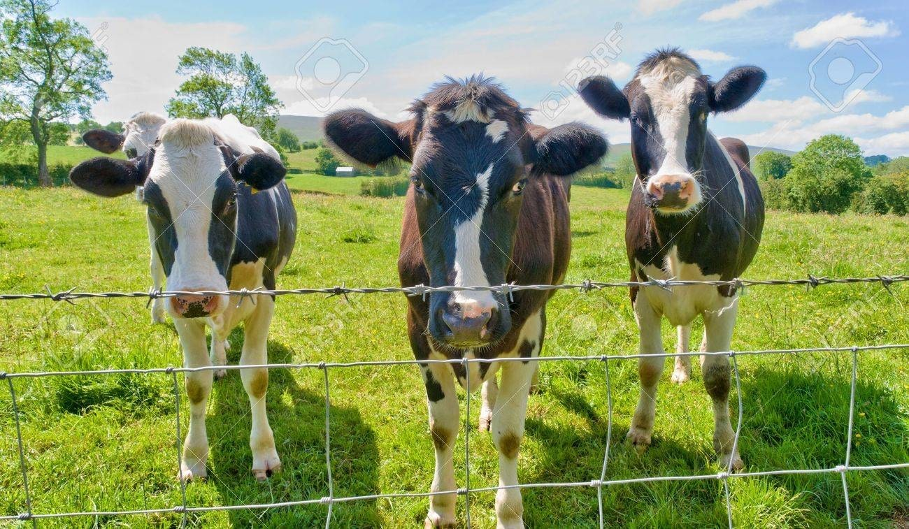
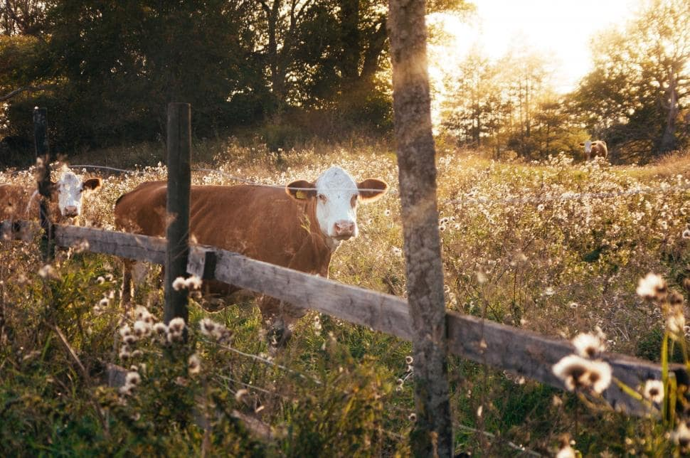
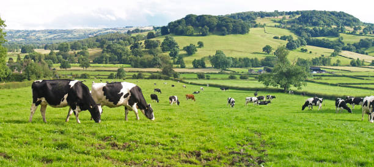
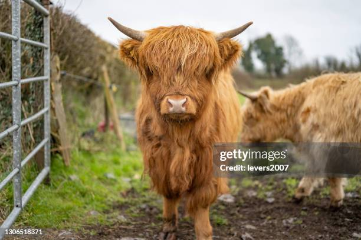
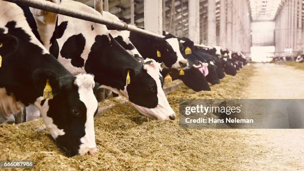
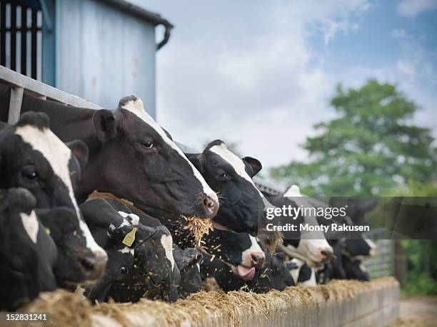
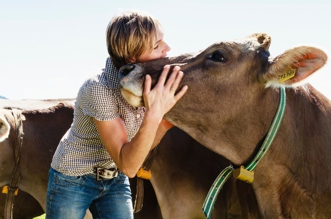
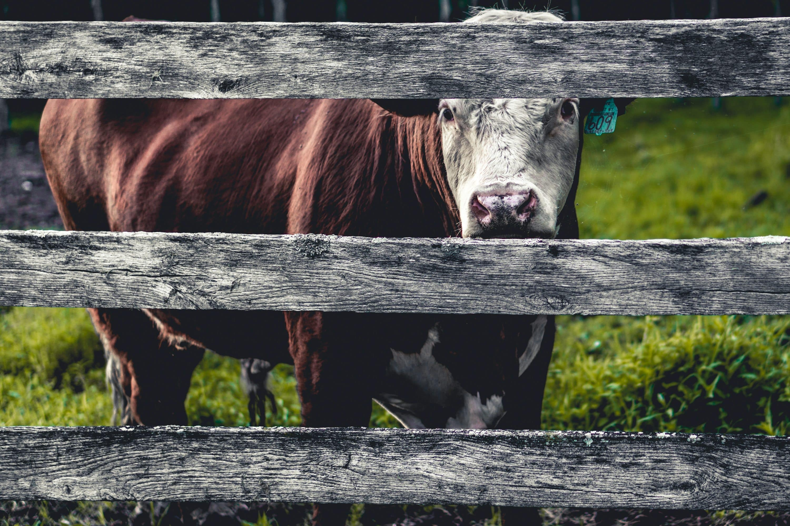
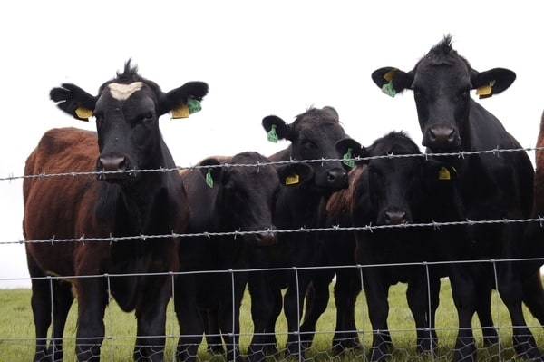
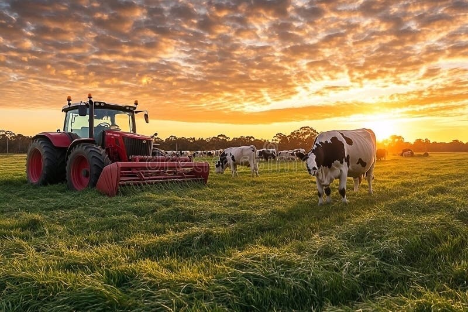
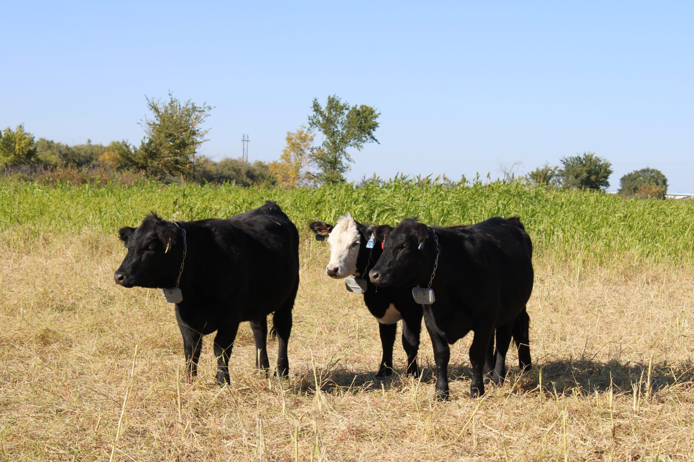
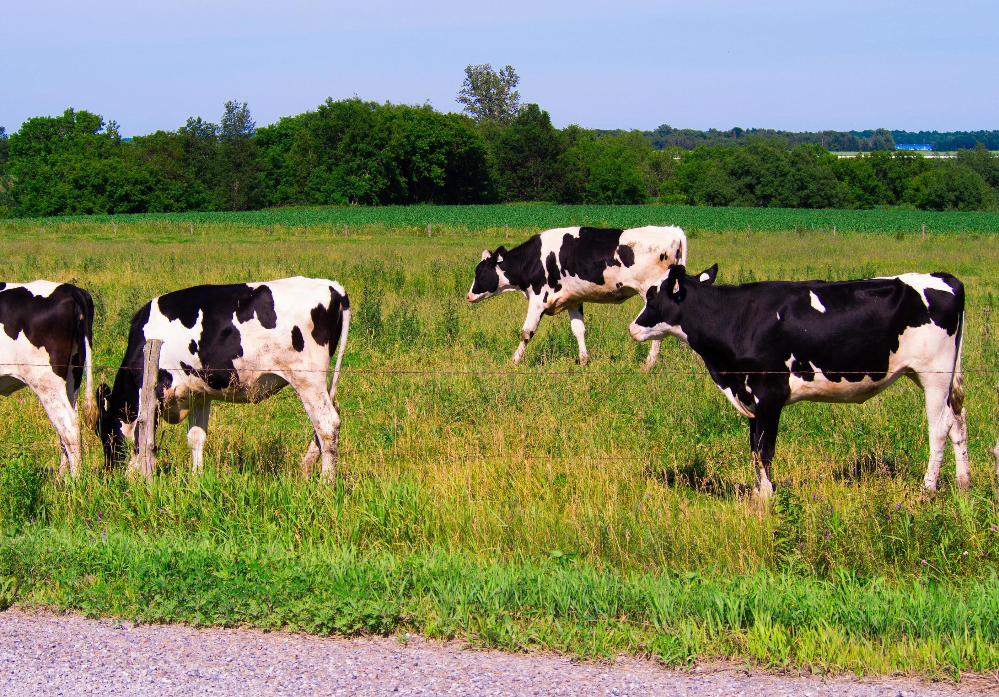
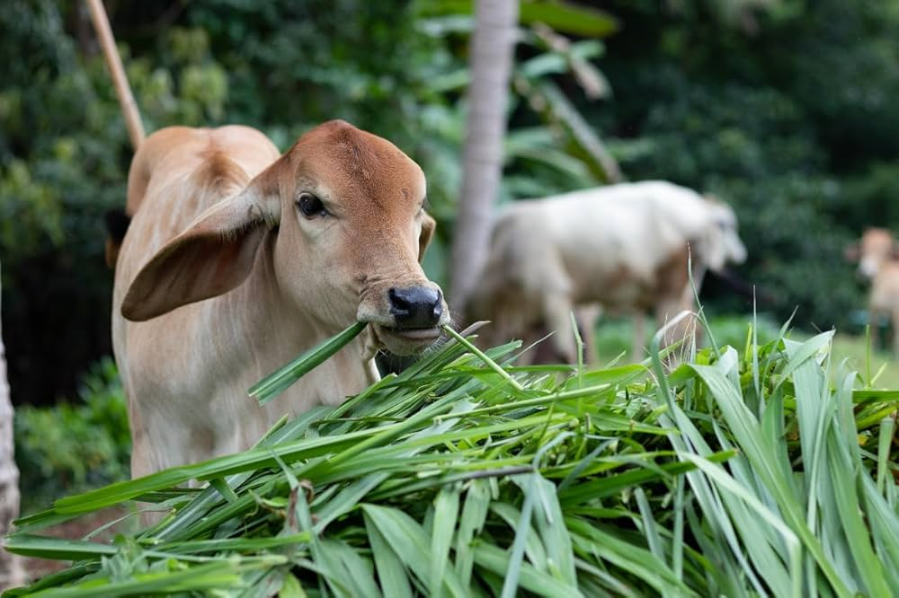
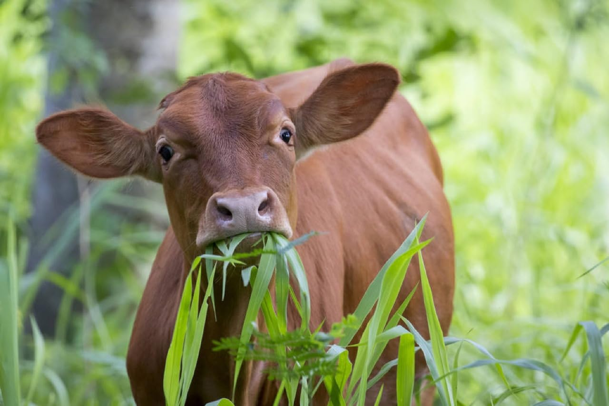
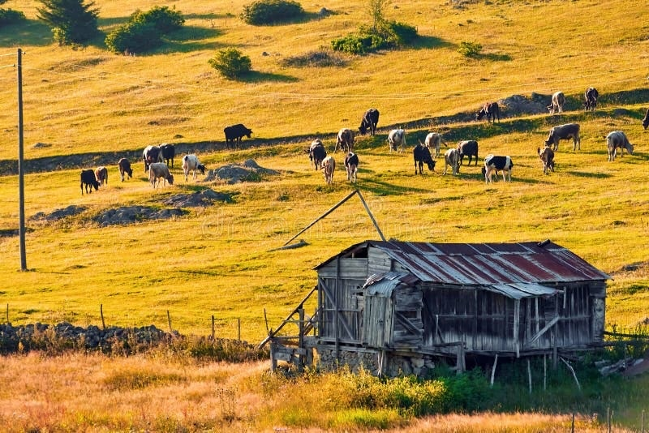
How to Use the Dashboard
- The timeline chart shows the total alarms per hour over the last 7 days, helping you monitor activity trends.
- The circular chart highlights the top 5 cows that have breached fences the most.
- Use the bell icon to review unread notifications.
- Access real-time tracking or fence editing using the header buttons.
- The dashboard updates automatically based on the latest farm data.
Why It Matters
- Identifying alarm patterns helps prevent future breaches by adjusting fences or deterrents.
- Spotting problematic cows early can reduce risks of escape and damage.
- Tracking alarms and breaches over time gives insights into fence strength and animal behavior.
- Data visualization enables quick decision-making, especially during emergencies.
- Alerts (Gmail and dashboard) ensure real-time awareness, even when you're not on-site.